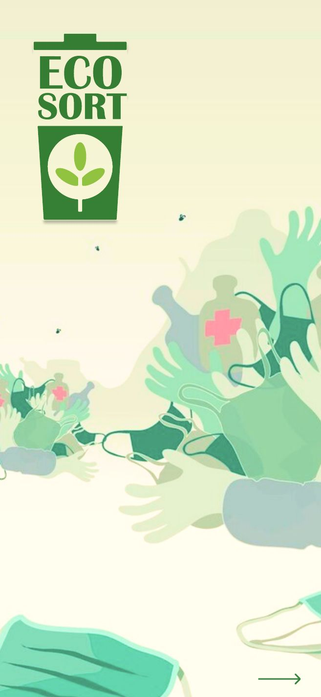
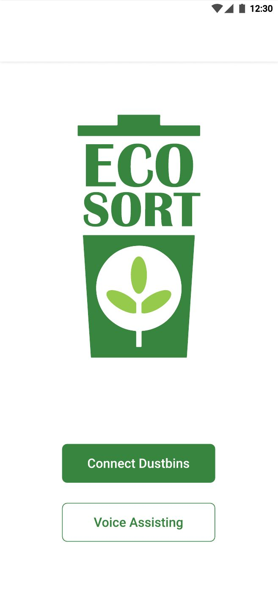
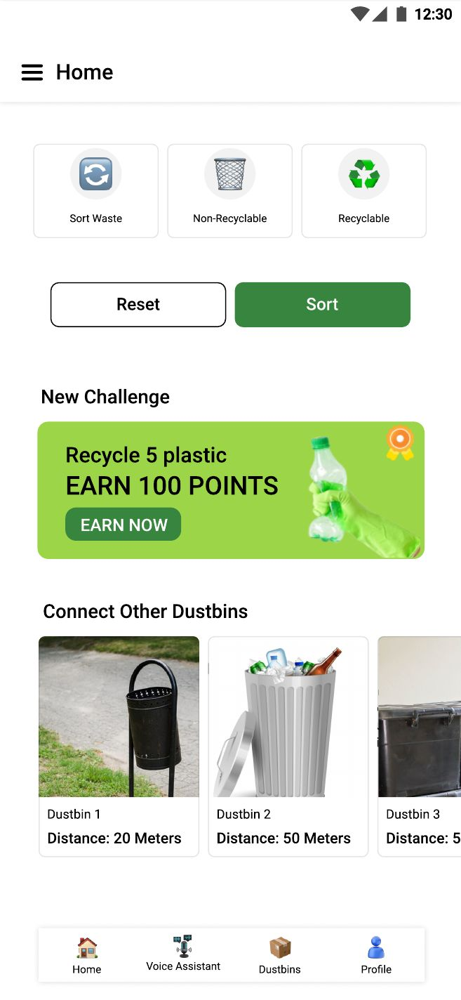
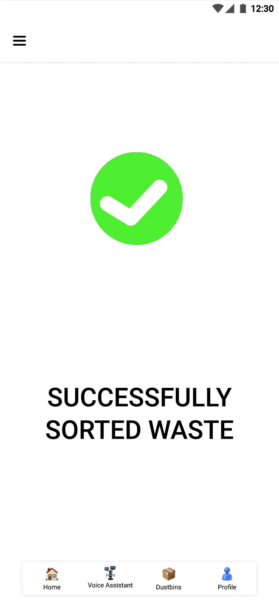
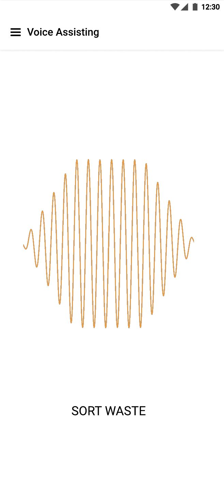
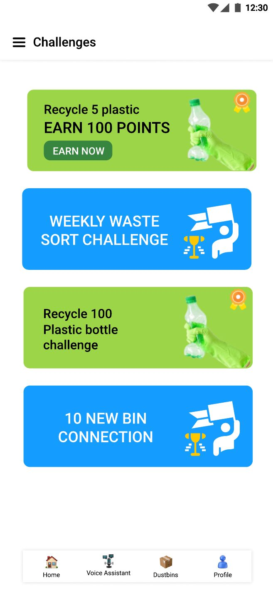

SBI Yono
Mobile banking app
Money transfer redesigned into three clear steps: enter, review, done.
Case study
- Problem: testing with 8 university students gave the app a score of 22 out of 100 (under 68 means hard to use), with a crowded home screen, too many pages to send money, and freezing.
- What I did: removed ads, put the transfer on one page, and added a review screen, a separate OTP screen and a clear success screen.
- Targets: score above 70 and send money 45% faster. These are estimates that still need a second round of testing.
Meadow Guard
Smart locker · Team project
A locker kiosk for Edinburgh's Meadows, designed to feel part of the park.
Case study
- Problem: there is nowhere safe to leave belongings in the park, and people said trust mattered more than convenience.
- What I did: interviewed 5 people on site, then made a persona, storyboard, nature-led moodboard and prototype with PIN and Face ID.
- Result: usability score of 94 out of 100, and every tester preferred the nature-led look.
Future is One chatbot
Real estate · Mobile-first
A sales bot that shows homes first and asks for contact details last.
Case study
- Problem: people hate typing, the old bot opened blank, and it asked for a phone number before showing any property.
- What I did: four location buttons (Hick's Law), large thumb-sized buttons (Fitts's Law), and property details before the form (progressive disclosure).
- Built with the Sales Team, using what they heard in real customer conversations. See the live site






EcoSort
Healthcare waste app
Voice-guided waste sorting for hospital staff, built to work for everyone, sighted or not.
Case study
- Problem: hospital staff are always in a rush, and wrong disposal puts people and the environment at risk. I interviewed doctors, nurses and cleaning staff and observed hospital wards.
- What I did: a map that finds the nearest bin within 100 m over hospital Wi-Fi, a hands-free voice assistant for visually impaired staff, and weekly challenges with points.
- What didn't work: Bluetooth (range too short) and a waste scanner (too slow), so I dropped both.
Add EcoTech screenshots here
Solar Roof website
EcoTech Solar Roof
Website · Team project
A solar tile website that is simple for sceptics and credible for tech fans.
Case study
- Problem: solar is jargon-heavy and dominated by big brands, so trust and price clarity were the challenge.
- What I did: two opposite personas, card sorting for the navigation, three high-fidelity directions, then a questionnaire (6 people) and heuristic review (4 people).
- Result: a full shop-to-account flow with clear pricing and a turquoise brand. See the live site